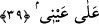

ve ihsanda bulunmuştuk, demektir.
38. Bir zaman, vahyedilecek şeyi annene (şöyle) vahyetmiştik:
“Bir zaman, vahyedilecek şeyi annene” şöyle “vahyetmiştik:” Burada geçen
vahiyden murâd, peygamberlere gelen vahiy değil, “Rabbin karıncaya ilham etti” (en-
Nahl, 16/68) âyetinde geçtiği üzere ilhâm mânâsınadır. Çünkü Mûsâ (a.s.)’ın annesi
peygamber değildir. Bilakis bu bir ilhamdır. Allah, Mûsâ’yı sandığa koyup nehre
bırakması hususunda onun kalbine karşı konulması imkânsız bir kararlılık verdi.
el-Es’iletü’l-mukhime’de der ki: “Sırf ilham geldi diye onun oğlunu nehre bırakıp
hayatını tehlikeye sokması nasıl mümkün olur?” şeklindeki bir soruya şu cevap verilir:
Onun annesi iki tehlikeliden birini seçmek zorundaydı. O da iki şerden daha hayırlı
olanını seçti.”
Anlaşılan o ki Allah Teâlâ, Mûsâ’nın annesinin Mûsâ incisinin sedefi olmasını takdir
etmiştir. Nasıl ki sedef, incinin ışığıyla aydınlanırsa annesinin göğsü de Mûsâ’nın
peygamberlik nuruyla parlamıştır. Bu tür ilhamlar, hâl ehli havâssın hallerindendir.
“vahyedilecek şeyi” ifâdesinden maksad, sonraki âyette gelecek olan Mûsâ (a.s.)’ın
sandığa konulup denize bırakılması emridir. Bu husus, Mûsâ (a.s.)’ı önce korkutmak ve
değerini artırmak üzere kapalı olarak belirtilmiş, sonra da kendisinde iyice yer etmesi
için açıklanmıştır.
39. Mûsâ’yı sandığa koy; sonra onu denize (Nil’e) bırak; deniz onu kıyıya atsın
da, benim düşmanım ve onun düşmanı olan biri onu alsın. (Ey Mûsâ! Sevilmen) ve
benim nezaretimde yetiştirilmen için sana kendimden sevgi verdim.
“Mûsâ’yı sandığa koy: Sonra onu denize” Nil nehrine “bırak.” Yâni, biz Meryem’e
onu denize bırak, dedik. Âyette geçen ilk ‘kazf’in mânâsı koymak, ikincisininki ise
bırakmaktır. Ancak bundan maksad onun sandıksız olarak bırakılması değildir.
“ müfessirlerin hepsine göre Mısır’ın Nil nehridir. Çünkü bu kelime hem deniz,
hem de büyük nehir için kullanılır.
Eğer “Başkası değil de niçin Mûsâ (a.s.) denize atılmıştır?” diye sorulursa, şöyle
cevap veririz: Hikmet ve ma‘rifet lisanıyla bu soruya iki cevap verilebilir. Hikmet